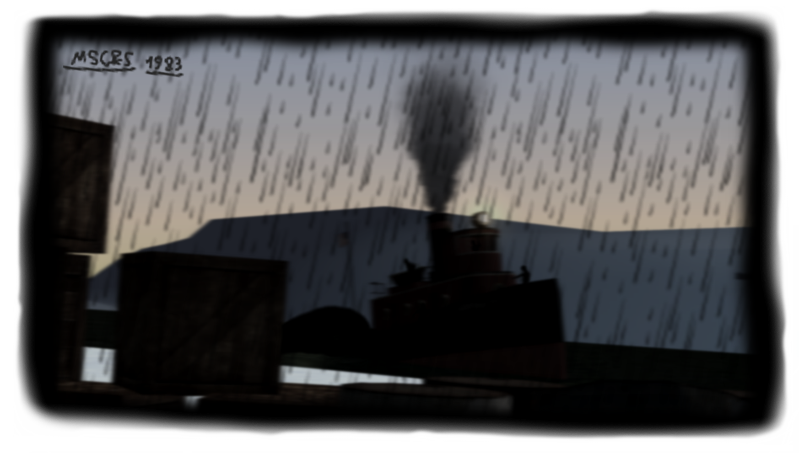

Mississippi Central & Southern's Switchers & Tales of the South
Little Saddie
Standing on site is former B4 0-4-0 switcher number 530. Built in 1905 for the Meridian & Philadelphia along with twelve other classmates, 530 started life as number 27 for the M&P. She led a rather standard life on their system with rarely any incident. Then on the evening of March 11th 1928 she was struck by a fast mail service which severely damaged her boiler, frames, smokebox, and tender. At the time she was a new piece of company equipment for the MSC&S and was sent to Gulfport for heavy repairs and rebuilding. Number 27 would be placed into the shop complex and not seen for several months during her rebuild. On the morning of February 23rd 1930, 27 was gone and lost to time. What rolled out of the shops barely resembled what had once been shoved into the complex. With her original number shed and a name to her, MSC&S 530, or now known as little Saddie was born. Saddie was designated as the Gulfport shop switcher as the original switcher was down for repairs and was quite old at the time with it being a third hand owned piece of equipment. She served diligently as their beloved locomotive from 1930 all the way to 1947 when she was pulled from service and replaced by a munch larger 0-8-0 dubbed “Big Saddie”. This would relegate 530 to semi permanent yard switching duties. Then in 1956 she was pulled from service and sold to the highest bidder. Saddie has since been unlocated and is speculated to be somewhere within the United States. Thought records do state that a sugar company purchased the locomotive, although the records were dowsed with water and are barely legible.
The B5s Vs. the Big World
Ordered in 1933, the Russian state railways placed an ordered of five switchers to test out foreign products for industrial use they stayed there for a total of 13 months for testing. Russian state railways was less than impressed with their performance so they were sent back to ALCo once back, they were converted to standard gauge and sold to the highest bidder, which happened to be the MSC&S. Delighted with a small but powerful switcher they obtained the diagrams from ALCo to build their own copies of them, but what of their strange appearance? This look for the side tank switchers would later go on to inspire the 9P class of 0-6-0t switchers for Russia (as illustrated below). With the quintet back in the states, the USATC would conduct trials of the design and see what capabilities it could have if tweaked and modified for a smaller European country this would result in the creation of the USATC S110 class of 0-6-0t switchers, these tank engines were more powerful than it's smaller counterpart. These switchers dared to go where the S100 didn't even dream of turning a wheel in being dispatched to countries such as New Zealand, Japan, Australia, some even venturing on Finnish broad gauge! However in a rather funny twist of fate the Finnish examples would later be captured by Russian soldiers and taken as they'd been deemed valuable to the war machine. Back on the MSC&S the Quintet had now gained twenty five other class members with the original five being distinguished with a red star usually mounted on the sides of the cylinder chest with only two retaining their Russian styled step top whistles. One example went as far as to be decorated with a Hammer and cycle stencil under the cab, but this was removed after a week of being applied due to communist association and suspicion of spying. Post WWII saw one of the original five gaining a reputation for trouble as this particular locomotive, road number 1190, was the favorite engine amongst Engineer Kieth Blanson and Marcus LaPlace. The two men would decorate the engine with colorful banners and even at some point and air whistle and Tyfon style in similar fashion to the larger Russian engines abroad and supposedly a whistle similar to the ones used on the Su class of 2-6-2s and even a headlight from an actual 9P and lastly the title “Laplace’s Angel” by shop crews These would remain on 1190 until the end of its service career being removed from the roster in 1954. With 1190 being purchased a full two years before her intended withdrawal date, something special was clearly seen in the Bulky 0-6-0t. After being placed into a manifest bound for Jackson, 1190 wouldn’t be seen running on home rails for a staggering ten years. During this time frame she would be owned by a local steel mill for six weeks until she was purchased yet again and shipped up further Northwest in the state near Arkansas. Now stationed near Sumner Mississippi on a small shortline section, she would serve on the Sumner, Arkansas, and Delta for the next eight years. In the span of a year and a half she would be purchased for a third time by a man by the last name Heemeyer who once again moved her to a new location in the state, this time to Natchez Mississippi, near the border of Louisiana. Now having traveled from top to bottom, 1190 would be the B5a with the most distance traveled out of any of the class. Unfortunately, her new owner would perish in a house fire a mere month into his ownership of the locomotive. Now being sold off at auction, 1190 was purchased by the rather familiar museum at Gulfport, Now back on home rails and back at her home, 1190 is once more in her element and as happy as can be so to speak. She has remained there ever since with on and off operational service and demonstrations of how switching was done in the days of steam and how her crew did it in particular. She has even doubleheaded with BGKRR 20.
Roustabout's on the Road
If a switcher has the cosmetic combination of a bald smokebox top and a centered headlight, these are traits of a roustabout What exactly contributes to gaining these cosmetics? If a crew has been found out for any actions deemed wrong by the road, their locomotive will be stripped of any customizations, have any component (such as a dynamo or bell) removed from its smokebox top, or front and have its headlight centered after this change is done to a locomotive, it’s stripped of its original division markings and moved elsewhere on the system, usually McKracken Harbor for the smaller switchers No shop crew is proud to say they roster a roustabout, but in the event they do have to roster it, little care is taken for it’s cosmetic appearance. As a result, most of these locomotives were mechanically sound yet looked very worn and were filthy with a coat of grit grime and filth This practice would end at the tail very end of the steam era only ending mere months before the final steam locomotive was pulled from service Do note, this can apply to some of the larger engines too in some cases, mainly road switchers who spend more time switching than actually on the road, even some mainline freighters even were roustabouts in some rare cases. Most notably an H1a series 4-8-0 with a square tender as opposed to the large Vanderbilt style tender it was given upon delivery.
Loboster Lamet
In the bay New Orleans a ship sank while carrying a radioactive cargo flask and wasn't found until 1983. The events which happened as a result of the flask being lost are as follows: An MSC&S owned Steam tug, formerly a US navy tug, was dispatched to take a car ferry from one side of the bay to the other amidst heavy rain, high winds, and dense sleet giving low visibility all over the bay. Upon arrival, it was discovered that the car ferry wasn't at the listed dock on the order form that was given. Thus the tug's crew had to wheel around the bay to the correct dock, however during the brief trip something completely unexpected had happened. The tug suddenly rocked and shuddered as it stopped violently and abruptly, the Captain sent out a crewmate to see what happened to the immobilized vessel and to see what could be done to set it free, after the slow and extremely low clearance mission to see what had the vessel stuck, the crewmate relayed a message back to the captain via walkie-talkie. Once the obstruction was found the crewmate's communication was completely lost and with much confusion the captain sent the rest of the seven man crew to see what they could do, after taking tools and items to remove whatever it was that was keeping the vessel stationary were grabbed and equipped, the crew stepped onto the deck of the tug to see a blue blob grasping the tug's side in the rain, fog and sleet. The captain sent a man forward to go try and torch the blob off the hull with a butane torch, and as he began to cut the blob, suddenly the blob detached and slammed back into the bay's freezing waters for what the crew presumed to be the last they'd see of it. Without any warning of any kind, a wake of water parted the fog and what was revealed was a massive blue lobster that had slammed it's pincer onto the deck and held the tug captive once more within it's crustaceous clasp. The captain shouts "ALL HANDS ON DECK MEN" as the crew frantically scuttle about the deck to deal with this new found threat. Amongst all the chaos, the Crustacean was unamused and slammed it's claw into the side of the tug sending it sloshing across the bay and into a bridge support causing sever damage to the hull. Just as suddenly as the blue beast had appeared it sank below the bay's waters... The crew now regaining it's grasp on the situation became to clamber below deck and start to pump water out from the crippled hull but sadly to no avail. Running out of options and choices, the captain made a list ditch effort to beach the tug on a nearby river bank just beyond the bay. As the rain began to slam onto the tug's deck, the vessel slams into the river bank and is lodged into the mud and over growth the crew, minus one, were all accounted for and the tug was later salvaged and repaired. Soon after, the port authority began to scour the bay for the lost crewman's remains but no avail. What they did find however is the flask that was lost and the several species of aquatic creature that had been mutated by said flask. These include: Catfish species with an average length ranging of 30ft to 50ft, Miniature Sperm whales whales with a maximum range of 10ft in length, rumored jellyfish species with special electrical properties, and finally an evolved species of trout with a more hostile attitude towards humans. As for the crustaceous creature that attacked the vessel, it was not to be seen again until 1996 after it breached the bay's surface once more...
